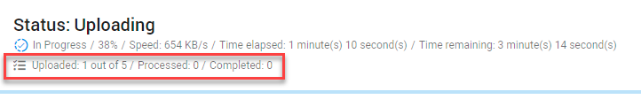
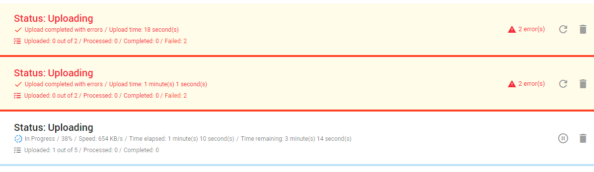

On the Home page, select
Upload:
On the Upload page, select + Upload.

Select one of the following upload options:
Upon creating the matter, data from the Enron databases can be uploaded into the matter by clicking Upload.
On the Home page, select
Upload:
On the Upload page, select + Upload.
Select one of the following upload options:
Status
After defining and starting your upload, you will return to the main Upload page. Here you can view the status and progress of all uploads.
The status of an upload can be one of the following:
Additional Status Information
By default, only two uploads can be in progress (are active) simultaneously. When a third upload is added, it will be paused (inactive) until one of the two previous uploads is finished.
| Note I: If you pause an active upload, the inactive upload that is next in queue will start automatically. |
| Note II: If you start an inactive upload, an active upload will be paused. |

During uploading, you can view how many documents are already uploaded,
processed or completed.

When some files are not completed (for example, corrupted or password protected), the progress line and status line text is orange to warn you.

When an error occurs during upload, you will be warned with a yellow background and red text. Also, the number of errors is shown.

Options per Upload
You can choose to pause/resume, delete, retry an upload or download the uploaded files/folders using the icons behind each upload.
The available options depend on the status of the upload.
Pause an upload by clicking Pause upload:

Resume by clicking Resume upload 
When you resume after navigating to another page in ZyLAB ONE, define Resume upload.
Select the same files/folders again (files already uploaded, will not be uploaded again), define the custodian/source again and start the upload.

Delete an upload by clicking Delete upload:


View errors that were found during upload by clicking the red warning sign: 

Close the log file or Retry failed files.
You can easily upload any data sources that you may need to respond to an access request.